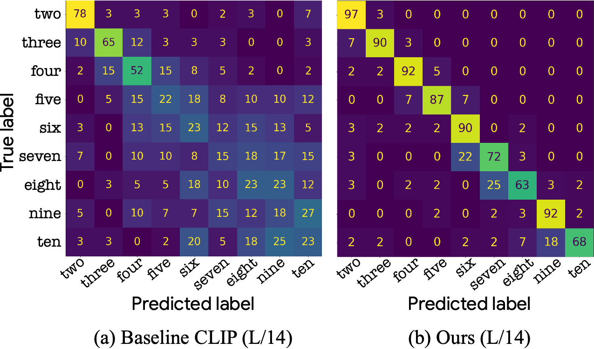

Teaching CLIP to Count to Ten
| Roni Paiss | Ariel Ephrat | Omer Tov | Shiran Zada |
| Inbar Mosseri | Michal Irani | Tali Dekel |
 |
|||
|
|
arXiv | PDF
Abstract
Large vision-language models (VLMs), such as CLIP, learn rich joint image-text representations, facilitating advances in numerous downstream tasks, including zero-shot classification and text-to-image generation. Nevertheless, existing VLMs exhibit a prominent well-documented limitation -- they fail to encapsulate compositional concepts such as counting. We introduce a simple yet effective method to improve the quantitative understanding of VLMs, while maintaining their overall performance on common benchmarks. Specifically, we propose a new counting-contrastive loss used to finetune a pre-trained VLM in tandem with its original objective. Our counting loss is deployed over automatically-created counterfactual examples, each consists of an image and a caption containing an incorrect object count. For example, an image depicting three dogs along with the caption ``Six dogs playing in the yard''. Our loss encourages discrimination between the correct caption and its counterfactual variant which serves as a hard negative example. To the best of our knowledge, this work is the first to extend CLIP's capabilities to object counting. Furthermore, we introduce CountBench -- a new text-image counting benchmark for evaluating a model's understanding of object counting. We demonstrate a significant improvement over state-of-the-art baseline models on this task. Finally, we leverage our count-aware CLIP model for image retrieval and text-conditioned image generation, demonstrading our model can produce specific counts of objects more reliably than existing ones.
Method
Our framework consists of two main stages. (a) We first automatically create a counting training set, comprising of clean and diverse images along with corresponding captions that describe the number of visible objects in the scene. (b) We then leverage this dataset to finetune the VLM model through a designated contrastive loss that is used in tandem with the original generic text-image objective. For the designated contrastive loss, we automatically generate counterfactual examples by swapping the true object count in the caption with a different random number, thus encoraging the model to distinguish between the correct and incorrect counts of objects.
Results
We evaluate our models and baselines on CountBench on the task of classifying the number of objects in an image in a zero-shot manner. For each image in CountBench we augment the existing caption with eight other possible captions by replacing the number in its caption with all the numbers in {“two”, ... , “ten”}, and calculate the similarity score between the image and each of the nine captions. The number in the caption that obtains highest similarity score with the image is considered the predicted number. As can be seen in the follwing onfusion matrice, our improved CLIP model is significantly superior to the baseline across all numbers. We provide further evaluations in the paper, including performance on common benchmarks which verifes that the general zero-shot accuracy of the model is preserved.

Image Retrieval
Examplary results of text-to-image retrieval where the text explicitly describes the desired count of objects. As can be seen, when the requested number is larger than three, the images retrieved by the baseline model often depict arbitrary numbers of objects. Additionally, the baseline often retrieves the same images for several different requested numbers. In contrast, our results depict accurate object counts in most cases.
Relevancy Maps
To gain a better understanding of what our model learns, we use an explainability method to visualize the reasoning of the model. displays the relevancy maps of several image-text pairs. Note that the relevancy scores of the text are normalized to sum to 1. Examining the relevancy maps of the text, it is apparent that the relevancy score of the spelled number in the caption is significantly higher than the baseline model, which suggests that our model concentrates more on the mentioned number than the original one. Additionally, examining the relevancy maps of the images, it is evident that our model focuses on all pertinent objects in the image, whereas the original model primarily identifies a single instance of the described object.

Generation downstream Task
In order to demonstrate the effectiveness of our finetuned model on downstream image generation tasks, we use the textual embeddings of a CLIP-L/14 model finetuned with our method to condition an Imagen model, which is known to fail to reliably produce specific counts of objects. Using our counting-aware CLIP model as backbone we are able to accurately generate requested numbers of objects.
CountBench
We introduce a new object counting benchmark called CountBench, automatically curated (and manually verified) from the publicly available LAION-400M image-text dataset. CountBench contains a total of 540 images containing between two and ten instances of a particular object, where their corresponding captions reflect this number. The Images urls and their corresponding captions can be found here.
Paper
|
"Teaching CLIP to Count to Ten", Roni Paiss, Ariel Ephrat, Omer Tov, Shiran Zada, Inbar Mosseri, Michal Irani and Tali Dekel. [PDF] |
BibTeX
@article{paiss2023countclip,
title={Teaching CLIP to Count to Ten},
author={Paiss, Roni and Ephrat, Ariel and Tov, Omer and Zada, Shiran and Mosseri, Inbar and Irani, Michal and Dekel, Tali},
year={2023},
journal={arXiv preprint arXiv:2302.12066}
}